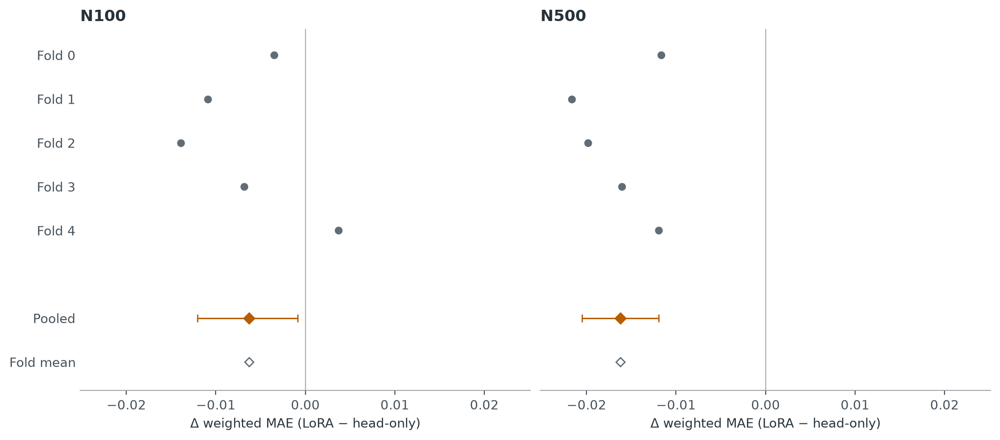
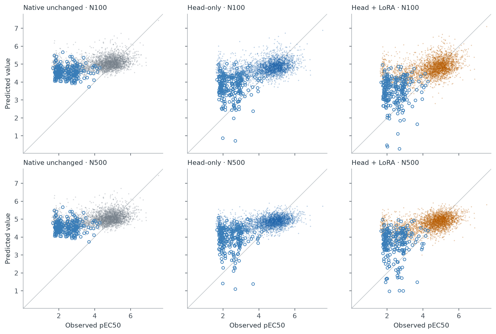
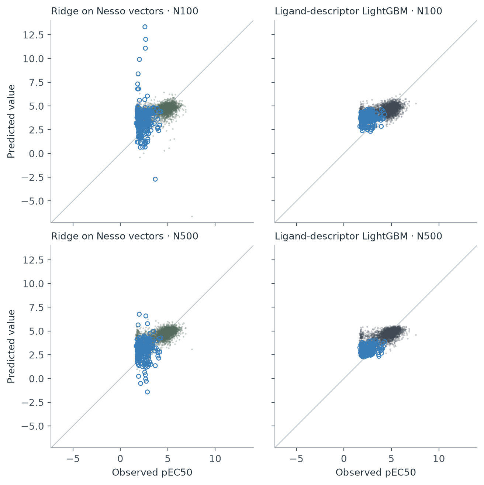
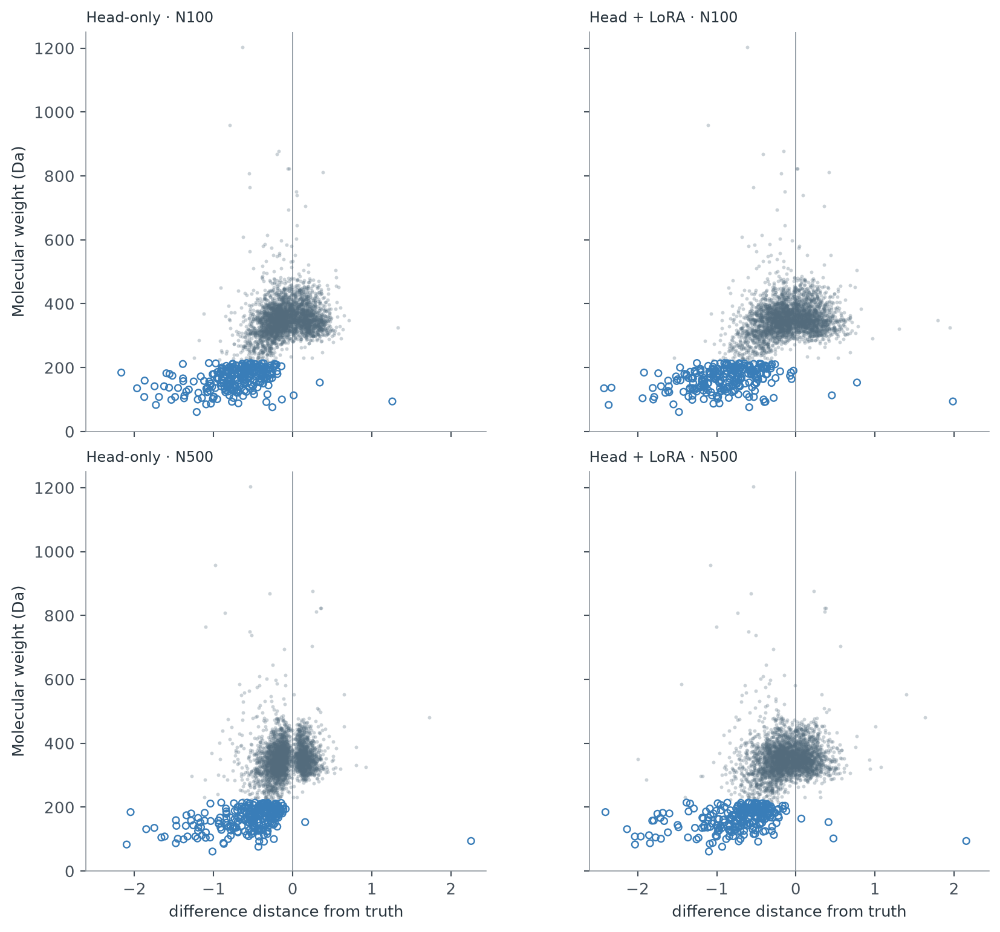
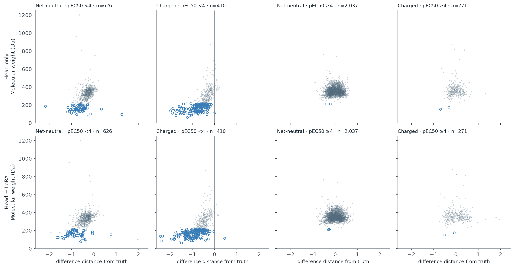
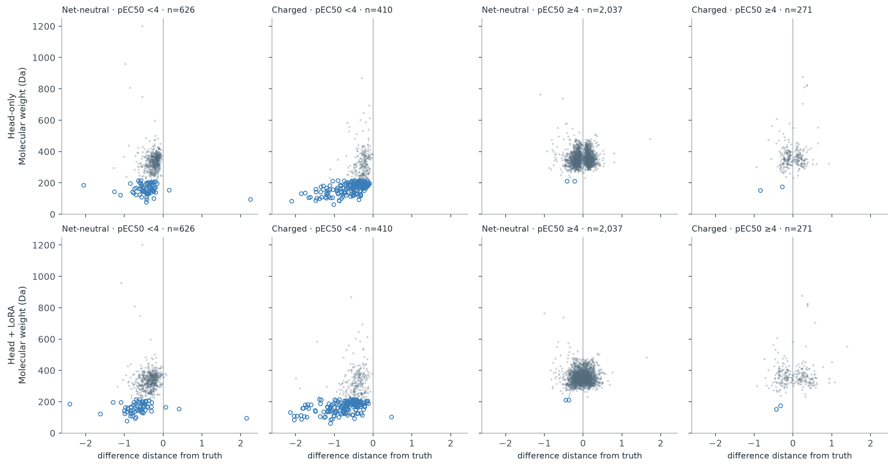
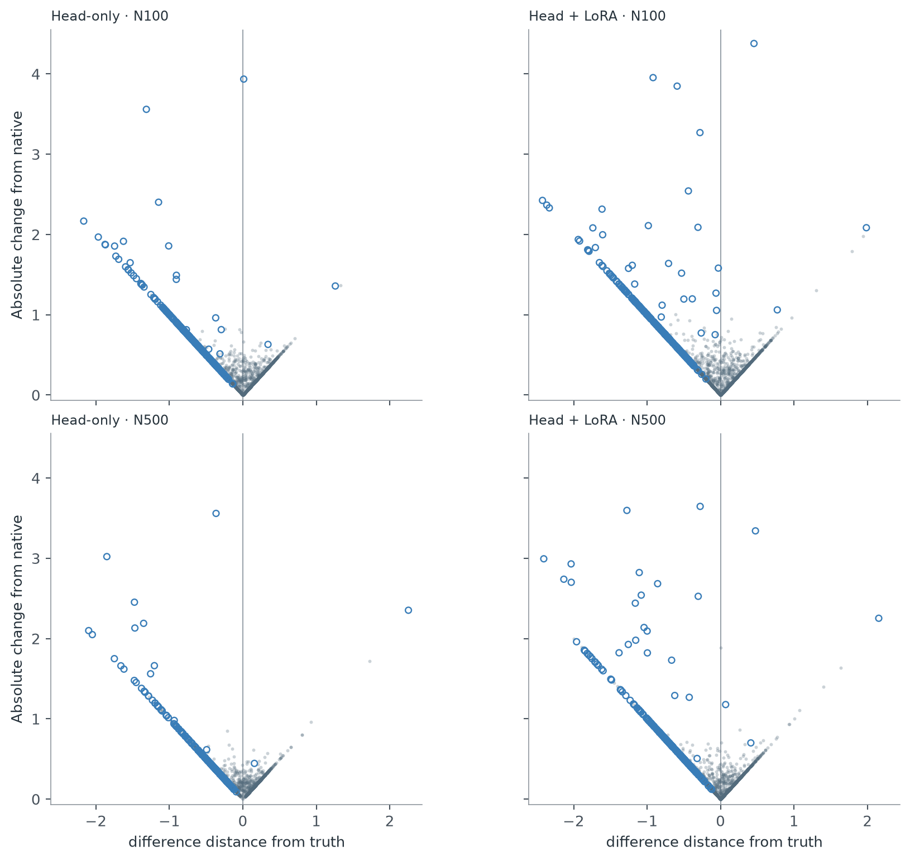

Nesso affinity adaptation: results
Created: 2026-09-07. Last edited: 2026-09-08.
Answer
Upstream LoRA adds useful predictive signal beyond head-only adaptation, but the gain is modest and does not make this recipe the strongest model at 500 labels. The gain mainly comes from reducing overprediction of low-potency compounds, not from uniformly improving the activity range.
All compound-level plots mark molecules below 215 Da with medium-blue open circles. This display threshold does not change the earlier descriptive MW-below-200 subgroup analysis. Orange top-20 rings in the proximity plot remain a separate annotation. The fold-level effect plot contains aggregate scores, not individual compounds.
What we tested
We recomputed results for all 20 completed neural fits and all 30 matched control evaluation cells. Each system and budget has one held-out prediction for each of 3,344 compounds across five reused development folds. These are not 50 independent experiments.
N100 means 80 compounds for fitting and 20 for interval calibration. N500 means 400 for fitting and 100 for interval calibration. Both neural methods use the same pretrained continuous heads, labels, seed, 40-epoch schedule and optimizer. Head + LoRA additionally fits rank-4 adapters at three upstream locations in each affinity member. The main Nesso trunk stays frozen.
The primary score is mean absolute error weighted by 1/max(reported assay SE, 0.1). Lower is better. MAE below is unweighted; Spearman measures ranking and higher is better. Errors are in pEC50 log units. The native reference uses the unchanged released IC50-equivalent conversion; it is not a native cellular pEC50 predictor.

{kind=link}
{kind=link}
Absolute performance
These scores pool the held-out compounds. The downloads also retain every fold and the equal-fold mean; pooled and fold-mean scores must not be interchanged.
| Labels | System | Weighted MAE | MAE | Spearman |
|---|---|---|---|---|
| 100 | Native unchanged | 0.6272 | 0.9141 | 0.3869 |
| 100 | Head-only | 0.5894 | 0.7907 | 0.4436 |
| 100 | Head + LoRA | 0.5831 | 0.7635 | 0.4943 |
| 100 | Ridge on frozen Nesso vectors | 0.6186 | 0.7663 | 0.4605 |
| 100 | Ligand-descriptor LightGBM | 0.6103 | 0.7450 | 0.5006 |
| 500 | Native unchanged | 0.6272 | 0.9141 | 0.3869 |
| 500 | Head-only | 0.5773 | 0.7932 | 0.4726 |
| 500 | Head + LoRA | 0.5610 | 0.7565 | 0.5293 |
| 500 | Ridge on frozen Nesso vectors | 0.5345 | 0.6666 | 0.6084 |
| 500 | Ligand-descriptor LightGBM | 0.5006 | 0.5996 | 0.6569 |
The native point predictions are identical at both budgets. Only their within-budget interval calibration changes. Ridge uses the freshly captured 768-dimensional Nesso vectors with fit-only regularization selection. LightGBM uses the matched historical RDKit2D/Mordred2D/Morgan recipe, with no new fitting here. The controls have different tuning procedures, so they provide practical context rather than an optimizer-matched architecture ablation.
What LoRA adds
At N100, LoRA lowers weighted MAE by 0.0063, or 1.1%, versus head-only. It wins on weighted MAE in four of five folds. Unweighted MAE falls by 0.0272, and pooled Spearman rises from 0.444 to 0.494.
At N500, LoRA lowers weighted MAE by 0.0162, or 2.8%, and wins in all five folds. Unweighted MAE falls by 0.0367, and pooled Spearman rises from 0.473 to 0.529.
The retrospective paired 95% chemical-group bootstrap intervals for LoRA minus head-only weighted MAE are -0.0121 to -0.0009 at N100 and -0.0205 to -0.0120 at N500. These intervals condition on the saved models, one subset draw, one initialization and existing development folds. They do not measure retraining variability or establish prospective performance.
The improvement is not uniform
Most of LoRA's net error reduction comes from the 1,036 compounds with observed pEC50 below 4. These represent 31.0% of compounds but only 16.4% of total evaluation weight. LoRA reduces their weighted MAE by 0.1115 at N100 and 0.1184 at N500 relative to head-only.
For the 2,308 compounds at pEC50 at least 4, LoRA is slightly worse than head-only on weighted MAE: 0.4483 versus 0.4340 at N100, and 0.4131 versus 0.4093 at N500. In the 4-to-5 bin, it is worse at both budgets. This matters if the objective is to distinguish useful actives rather than improve the full-cohort score.
The highest-potency bin contains only 56 compounds. All methods underpredict it. At N500, mean underprediction is 1.11 pEC50 units for LoRA, 1.17 for head-only, 1.33 for descriptor LightGBM and 0.92 for the unchanged native anchor. Thus LoRA improves on the matched head-only model at the upper tail, but does not fix the tail or improve on native there. Subgroup findings are descriptive; no operating threshold was selected.
What more labels buy
Increasing the budget from 100 to 500 lowers weighted MAE by only 0.0122 for head-only and 0.0221 for LoRA. The reductions are much larger for ridge, 0.0841, and ligand-descriptor LightGBM, 0.1097.
At N100, LoRA has the lowest primary weighted error among these five systems, but descriptor LightGBM has lower unweighted MAE and slightly better ranking. This is a weighting-dependent trade-off, not an all-metric win.
At N500, descriptor LightGBM beats LoRA on weighted MAE, unweighted MAE and ranking; it wins on weighted error in every fold. Its weighted MAE is 10.8% lower than LoRA's. Even ridge on the frozen Nesso vectors beats both neural recipes at N500. This points to the tested readout/training recipe as a limitation worth investigating; it does not establish that Nesso's features lack usable information.
Compression and intervals
The neural predictions still occupy too narrow an activity range. At N500, predicted standard deviation is 0.409 for head-only and 0.513 for LoRA, against observed standard deviation 1.133. LoRA partly restores spread, but low-potency compounds remain overpredicted and strong compounds remain underpredicted.
Training Huber loss is still decreasing at epoch 40, particularly for LoRA. That is a reason to test optimization settings separately, not evidence that more epochs will improve held-out performance. No alternative checkpoint was selected from these test results.
For N500 LoRA, nominal 90% intervals cover 89.4% of held-out compounds, but mean total width is 3.55 pEC50 units. Nominal 80% intervals cover only 76.0%, with mean width 2.16 units. Near-nominal aggregate coverage does not make these intervals precise or guarantee coverage under new chemical shifts.
The ridge control has some extreme predictions despite its stable-scaling recipe: N100 spans -6.60 to 13.33, and N500 spans -1.42 to 6.77. The official scores retain every prediction without clipping. These extrapolations deserve separate diagnosis before using that control operationally.

{kind=link}
{kind=link}
Control predictions, including every extreme value

{kind=link}
{kind=link}
Are the biggest changes near the fitting chemistry?
No—not by the chemical similarity tested here. The largest prediction changes are generally on compounds slightly less similar to the fitting set, not its closest neighbors. Occasional overcorrection is the more visible concern.
This retrospective diagnostic compares each held-out compound with its actual fold-specific fitting compounds: 80 at N100 and 400 at N500. Similarity is Morgan radius-2, 2,048-bit Tanimoto, without chirality. “Top 20” means the largest absolute change from the saved unchanged native prediction, selected separately for each method and budget. All 3,344 held-out compounds are retained at each budget.
| Budget | All compounds: median nearest-FIT similarity | Head-only top 20 | Head + LoRA top 20 |
|---|---|---|---|
| N100 | 0.237 | 0.214 | 0.198 |
| N500 | 0.277 | 0.250 | 0.268 |
Including the calibration compounds does not change the conclusion. The corresponding full-budget medians are 0.242 / 0.234 / 0.198 at N100 and 0.284 / 0.257 / 0.276 at N500, in the same column order. The maximum similarity to any actual fitting or calibration compound is 0.349398. The chemical split deliberately excluded similarities at least 0.35; this was verified against the actual acquired sets.
Across all compounds, the Spearman correlation of absolute prediction change with nearest-FIT similarity is weakly negative: head-only -0.096 and head + LoRA -0.093 at N100; -0.163 and -0.112 at N500. The top decile gives the same direction as the top-20 comparison. These are descriptive associations, not significance tests over independent refits.
![Gray dots: all 3,344 held-out compounds per panel. Orange rings: the 20 largest absolute native-relative changes in that panel. Both rows and columns share linear axes; every point is within view. Similarity is nearest actual FIT Morgan radius-2/2,048-bit Tanimoto, without chirality; calibration compounds are excluded. The split excludes similarity ≥0.35. Magnitude does not show direction or whether error improved; examples below retain both. These are paired compounds and reused development folds, not independent refits. Medium-blue open circles: molecular weight <215 Da; other compounds retain their original marks.](change-versus-training-similarity.png)
{kind=link}
Top 20 compounds and nearest neighbors (CSV) · All compounds (CSV)
Large changes can overshoot
The largest native-relative mover in both arms and budgets is nesso_4f5d960ee79593ed1c2e. Its measured pEC50 is 2.69 and native prediction is 4.65. Head-only and LoRA predict 0.72 and 0.27 at N100, and 1.09 and 1.01 at N500. Its nearest fitting compound has similarity 0.208 and label 1.92: this is not a close chemical analogue, and the downward correction overshoots.
At N500, nesso_56ced9f6b257bd2a4a19 has measured pEC50 2.13, native prediction 4.57, head-only 2.82 and LoRA 0.97. Its nearest fitting compound has similarity 0.265 and label 5.95. The large downward LoRA movement goes away from that neighbor's label.
The extra LoRA gain is not limited to nearer compounds
Both adaptations improve aggregate weighted error over native in all four nearest-FIT similarity bins: [0, 0.20), [0.20, 0.25), [0.25, 0.30) and [0.30, 0.35), at both budgets. LoRA also improves on head-only in every bin. At N500, its weighted-error reductions are 0.0085, 0.0115, 0.0159 and 0.0204 respectively: a larger benefit toward the upper end, but not only there. Bin counts are 89, 648, 1,612 and 995 at N500; 494, 1,576, 1,025 and 249 at N100.
The 20 largest additional LoRA-versus-head changes are a separate selection from the native-relative movers plotted here. Only 9/20 improve absolute error at N100 and 11/20 at N500. Weighted error worsens within these selected tails by 0.377 and 0.090 respectively, despite improving overall. Bigger changes are not automatically better corrections.
This supports a broad correction rather than adjustment confined to close chemical neighbors. It does not establish absence of overfitting in learned Nesso feature space or overlap with original pretraining data. The conclusion is conditional on this fingerprint, chemically purged range and reused development folds. No model was refitted. Downloads retain all compound predictions, exact nearest fitting neighbors, SMILES, selected movers and the diagnostic code.
Size, charge and distance from truth
The new X-axis, “difference distance from truth”, is |fitted − truth| − |native − truth|. Each distance is a nonnegative absolute error and can be zero. A negative difference means improvement; a positive difference means the fitted prediction is worse. This is not the absolute movement from native used in the earlier figure. Values are unweighted, in log10 prediction units; weighted summaries retain the original assay-SE weights.

{kind=link}
{kind=link}
Separate prepared charge and observed potency: N100 and N500

{kind=link}
{kind=link}

{kind=link}
{kind=link}
All error changes and chemistry (CSV) · Crossed-group summaries (CSV)

{kind=link}
{kind=link}
Does the size association survive adjustment?
Yes, for the magnitude of prediction movement. After adjusting ranked values for observed potency, prepared positive/negative charge indicators and fold, the partial correlations of molecular weight with absolute movement are -0.335 and -0.313 at N100, and -0.208 and -0.163 at N500, for head-only and LoRA respectively. Adding assay SE changes these little. Smaller compounds still move more after this descriptive adjustment.
The size association with accuracy improvement is much weaker after adjustment. For the signed difference in absolute error, the adjusted correlations with MW are +0.142 / +0.114 at N100 and +0.072 / +0.050 at N500. Positive here means larger compounds tend toward less improvement or more worsening. Much of the unadjusted size–improvement association overlaps with potency, charge and fold composition.
These partial correlations use least-squares residualization of ranks, not new predictive models or causal estimates. Potency is an observed-label diagnostic covariate, not an available input for prospective prediction. Prepared charge means the input state's formal charge, not an experimentally measured charge or a protonation-causality test.
What the crossed groups show
Among compounds with pEC50 below 4, small compounds move more and show larger mean absolute-error reductions within both prepared-charge groups. At N500 with LoRA, MW below 200 versus MW at least 200 gives mean error changes of -0.647 versus -0.357 for net-neutral compounds, and -0.822 versus -0.455 for charged compounds. Negative values are improvements. The corresponding counts are 58 versus 568, and 136 versus 274.
This is not a general benefit for charged compounds. Among the 269 charged compounds with MW at least 200 and pEC50 at least 4, N500 LoRA worsens mean absolute error by 0.033 versus native, and weighted MAE by 0.077. For the 2,037 net-neutral compounds in that size/potency group, mean absolute error improves by 0.029.
Size and potency cannot be fully separated by this dataset: only two of the 196 compounds below MW 200 have pEC50 at least 4, and both are charged. There are no small net-neutral compounds in that potency range. The absence of overlap prevents a reliable claim about small, high-potency compounds; an adjusted correlation does not fill that gap. The stratified plots retain all compounds and identify each panel's count.
Does the pattern appear in native Nesso features?
Yes. We recovered the saved native affinity representations for all 3,344 compounds: the two members' 384-dimensional vectors concatenated into 768 dimensions. These are the existing native features, not newly generated LoRA activations.
Smaller compounds tend to have a larger native feature-vector L2 norm. Its Spearman correlation with MW is -0.315, and remains -0.194 after adjustment for fold, potency and categorical prepared formal charge. Both affinity members show this direction separately. Feature norm depends on the representation's coordinate scale and origin; it is not an affinity, confidence score or distance to the fitting set.
At N500, native feature norm remains associated with the magnitude of adaptation after additionally adjusting for MW: partial correlations are +0.460 for head-only and +0.543 for LoRA. In contrast, its adjusted association with LoRA's signed error change is only -0.068. Larger feature norms identify stronger movement more clearly than they identify improvement.
Exploratory centered, unscaled PCA finds that the first component accounts for 66.8% of native-feature variance. Its MW correlation is -0.213, falling to -0.100 after adjustment for potency, charge and fold. This is descriptive geometry of the full development cohort, not a cross-validated predictive transformation. The native feature diagnostic uses categorical formal charge, while the preceding size diagnostic uses positive/negative indicators.
The size pattern is therefore already present in the native representation, and output sensitivity is not explained by size alone. This does not establish what changed inside LoRA: adapted internal feature tensors were not analyzed. No model inference or predictive retraining was performed; native cache hashes, row identities, diagnostic arithmetic and byte-identical CPU analysis replay were checked.
Decision
For the scientific question, the answer is a qualified yes: this upstream-adaptation recipe improves the matched head-only recipe on the overall score and ranking.
For choosing a broad N500 predictor among the tested systems, ligand-descriptor LightGBM is the strongest current reference. The LoRA recipe is not ready to replace it, and no method solves the strong-activity tail.
Do not launch another large GPU sweep yet. First choose the objective: better full-cohort accuracy or better prediction among active compounds. If continuing the adaptation study, use a small controlled optimization comparison with an inner validation rule, then additional subset draws/seeds and a genuinely untouched evaluation. Do not select a new recipe directly on these reused outer-test outcomes. Combining descriptor and Nesso predictions is a possible later experiment, not a result established here.
Limits and verification
The acquired subsets are nested, but calibration roles are not preserved between budgets: smaller-budget calibration compounds can become fitting compounds at N500. No outer-test labels enter the fits. The five folds have overlapping training pools; fold wins are descriptive, not independent replicate counts.
The chemical split excludes acquired compounds with Morgan radius-2/2048 Tanimoto at least 0.35 to any outer-test compound. There are 1,975 saved chemical groups; 1,458 are singleton groups, representing 43.6% of evaluated compounds. Chemical separation is explicit, but this is not a claim that every held-out group is a substantial medicinal-chemistry series.
All 50 cells' saved weighted MAE, unweighted MAE, rank, bias and interval coverage were independently recomputed from round-trip prediction values. Cell payload hashes, final neural checkpoint hashes, labels, weights, exact FIT/calibration/test membership and frozen-weight audit records were checked. The existing GPU replay proofs were preserved; this analysis did not rerun GPU inference or fit new predictive models. Reported bootstrap intervals use 4,000 shared within-fold chemical-group resamples, seed 20260907.
Operational failures and the approved cross-hardware tolerance amendment are preserved in the source evidence; they are not scientific failures. The native reference agrees with the saved neural baselines within 0.000001 on this cohort. Same-machine new-model replay remained exact. All run data was checksum-preserved before the cloud instance was destroyed.
Reproducible artifacts
Analysis code, protocol, all fold/pooled/stratum tables, compound predictions, group-resampling draws, source maps and verification hashes are under artifacts/analysis/affinity_comparison_20260907/.
The compact HTML and figure/data downloads are served at reports/architecture/results/. This document is the editable canonical interpretation; the HTML is generated from it.
Full numerical downloads and provenance
- RESULTS.md
- pooled_metrics.csv
- fold_metrics.csv
- paired_differences.csv
- stratum_metrics.csv
- novelty_metrics.csv
- training_history.csv
- heldout_predictions.csv
- potency_contributions.csv
- influence_diagnostics.csv
- sources.csv
- cohort.json
- role_nesting.json
- analysis_protocol.json
- verification.json
- bootstrap_draws.npz
- analyze.py
- render_report.py
- design_review.md
- verify_report.py
- independent_audit/README.md
- independent_audit/audit.py
- independent_audit/results.json
- independent_audit/pooled_metrics.csv
- independent_audit/input_hashes.json
- proximity.py
- proximity_protocol.json
- proximity_verification.json
- proximity_all.csv
- proximity_top20.csv
- proximity_summary.csv
- proximity_correlations.csv
- proximity_bins.csv
- PROXIMITY_RESULTS.txt
- proximity_figure.py
- proximity_figure_points.csv
- proximity_figure_verification.json
- proximity_design_review.md
- size_charge_analysis.py
- size_charge_protocol.json
- size_charge_points.csv
- size_charge_correlations.csv
- size_charge_strata.csv
- size_charge_verification.json
- size_charge_figures.py
- size_charge_figure_verification.json
- mover_chemistry.py
- mover_chemistry_summary.csv
- mover_chemistry_all.csv
- mover_chemistry_examples.png
- mw_markers.py
- mw_marker_audit.csv
- verify_size_charge.py
- size_charge_acceptance.json
- size_charge_independent_review.json
- size_charge_independent_review.txt
- internal_feature_diagnostic/analyze.py
- internal_feature_diagnostic/verify.py
- internal_feature_diagnostic/summary.json
- internal_feature_diagnostic/verification.json
- internal_feature_diagnostic/input_provenance.json
- internal_feature_diagnostic/output_sha256.json
- internal_feature_diagnostic/native_feature_scores.csv
- internal_feature_diagnostic/associations.csv
- internal_feature_diagnostic/adaptation_feature_rows.csv
- internal_feature_diagnostic/pca_variance.csv
- internal_feature_diagnostic/pca_loadings.csv
- internal_feature_diagnostic/pca_center.csv
- internal_feature_diagnostic/stratum_medians.csv
{kind=link}